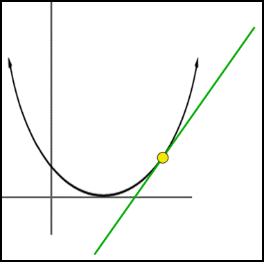
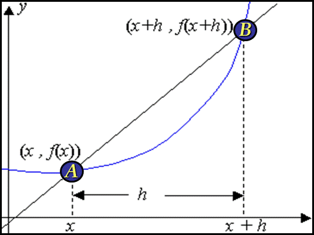
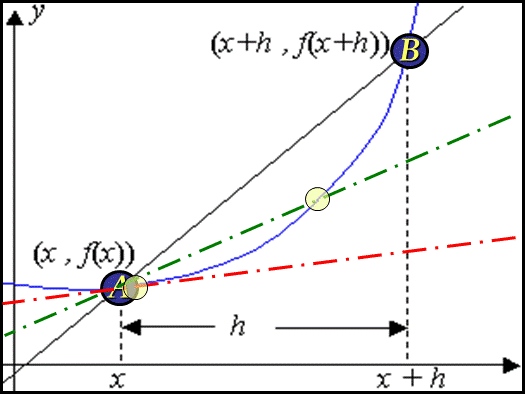

Tangent to a Curve
|  |
Recall... tangents & curves have the same slope at each point of intersection $m={Δy}/{Δx}$ |
| Consider the slope of secant line $AB$ |
 |
$A=(x_1,y_1)=(x,f(x))$
$B=(x_2,y_2)=(x+h,f(x+h))$
$m_{AB}={Δy}/{Δx}={y_2-y_1}/{x_2-x_1}={f(x+h)-f(x)}/{(x+h)-x}={f(x+h)-f(x)}/h$
| as x goes from pt B to pt A, what is h approaching?... so what's the slope of the tangent line at point A |

|
$\table m_{\text"tangent line"}, ={f(x+h)-f(x)}/{h}={f(x+0)-f(x)}/0; , ={f(x)-f(x)}/0; , =0/0, \text"the slope of the tangent line at A is undefined"$
| So we consider what happens to the limit as $h→0$ |
$m_{\text"tangent line"}=\lim↙{h→0}{f(x+h)-f(x)}/h$ |
| the slope of the tangent line is the derivative of $f(x)$ |
$f'(x)=\lim↙{h→0}{f(x+h)-f(x)}/h$ |
$\table f'(x)=\lim↙{h→0}{f(x+h)-f(x)}/h;
f'(x)=\lim↙{h→0}{3(x+h)^2+2(x+h)+1-(3x^2+2x+1)}/h;
f'(x)=\lim↙{h→0}{3x^2+6hx+3h^2+2x+2h+1-3x^2-2x-1}/h;
f'(x)=\lim↙{h→0}{6hx+3h^2+2h}/h;
f'(x)=\lim↙{h→0}6x+3h+2;
f'(x)=6x+3(0)+2;
f'(x)=6x+2$
$f(x)=3x^2+2x+1$
$f'(x)=6x+2$
We have shortcuts to determine derivatives
| Rules for Derivatives |
| Constant Rule |
| The derivative of a constant fn is 0, |
| If $f(x)=c$, then $f'(x)=0$ |
|
| Power Rule |
| If $f(x)=x^n$, where n is any real #, |
| then $f'(x)=nx^{n-1}$ |
|
| Constant Multiple of a Power Rule |
| If $f(xcx^n$, where c & n are real #s, |
| then $f'(x)=n•cx^{n-1}$ |
|
| Sum Rule |
| If $f(x)=g(x)+h(x)$, |
| then $f'(x)=g'(x)+h'(x)$ |
|
Find the derivative of...
| $f(x)=3x^2+2x+1$ |
| constant multiple of a power rule | | $2•3x^{2-1}$ |
|
| constant multiple of a power rule | | $1•2x^{1-1}$ |
|
| constant rule | | derivatives of constants = 0 |
|
| $f(x)=\bo 6\bo x+\bo 2(+ \bo 0)$ |
Homework